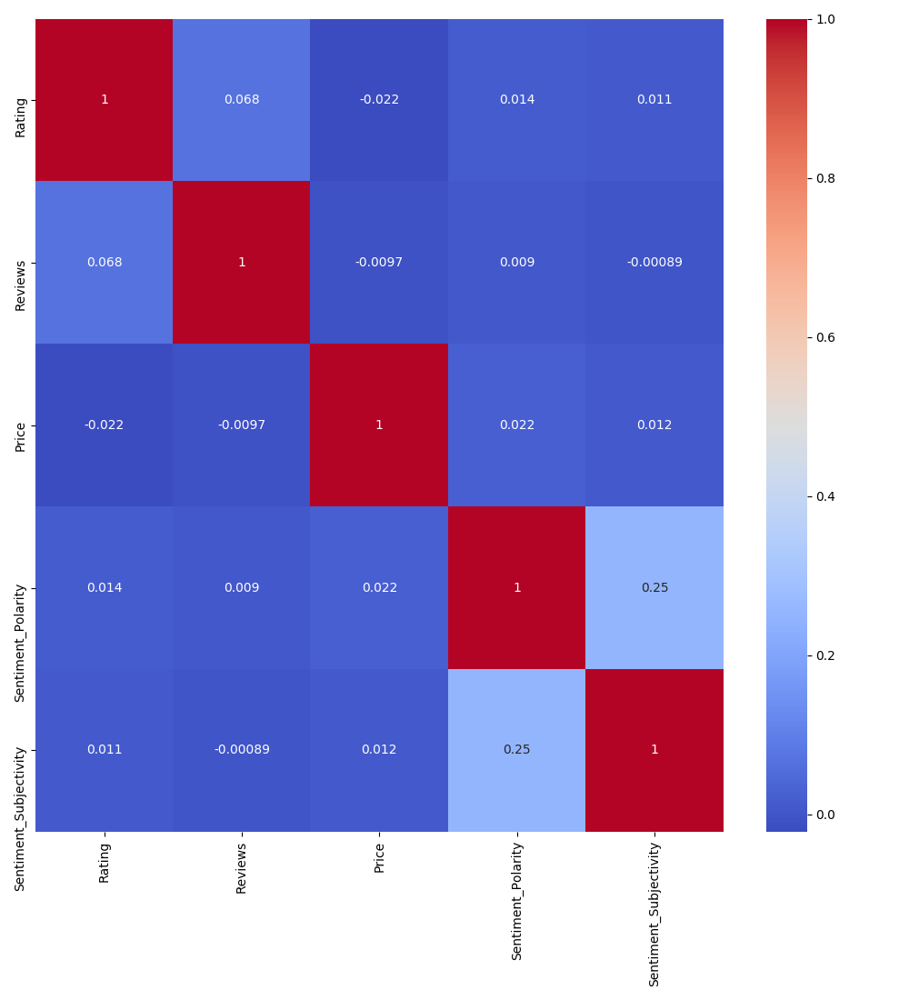
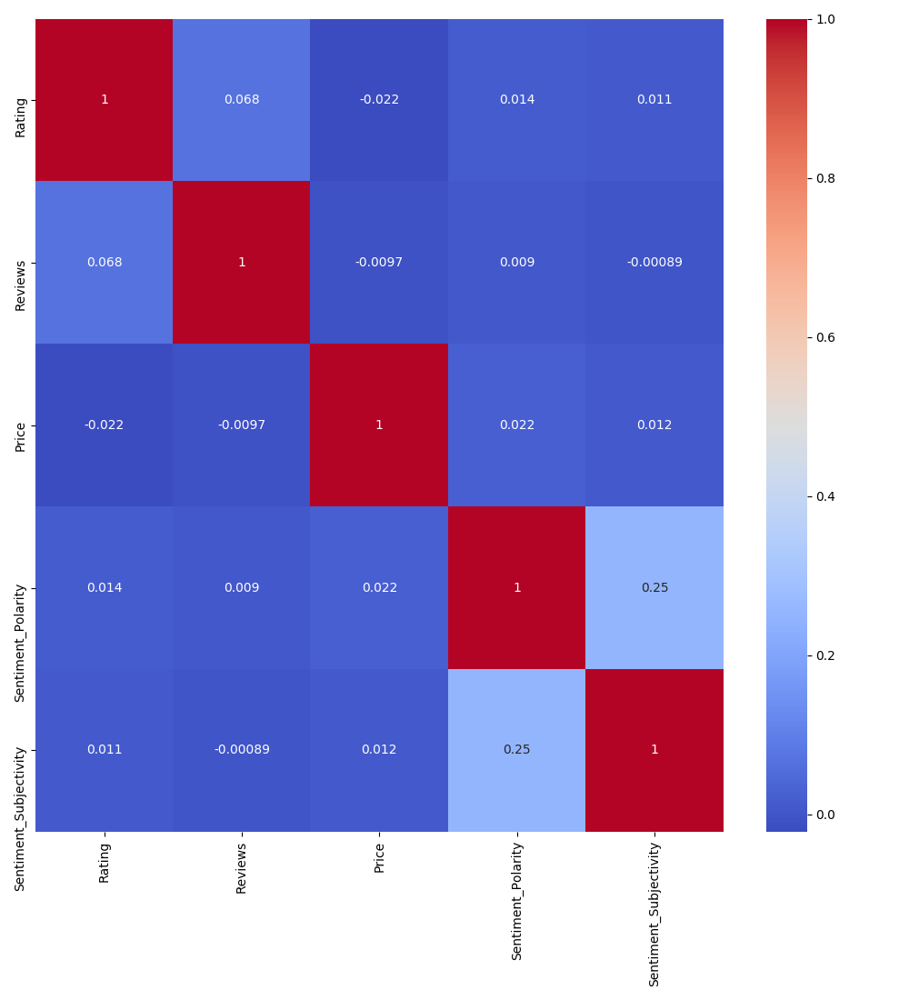
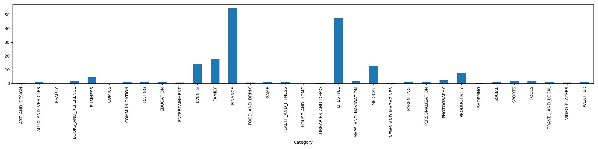
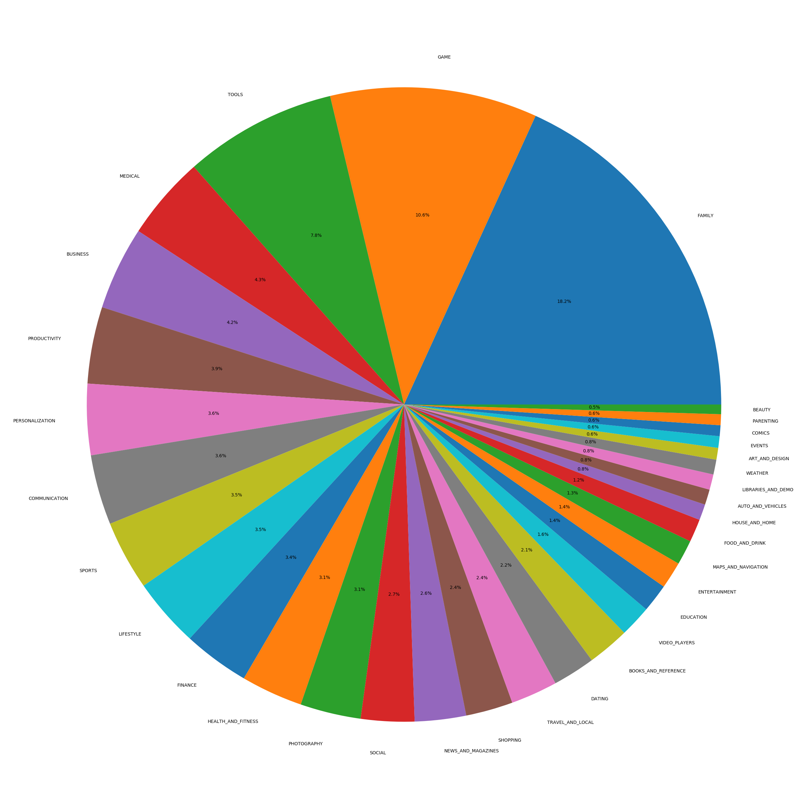
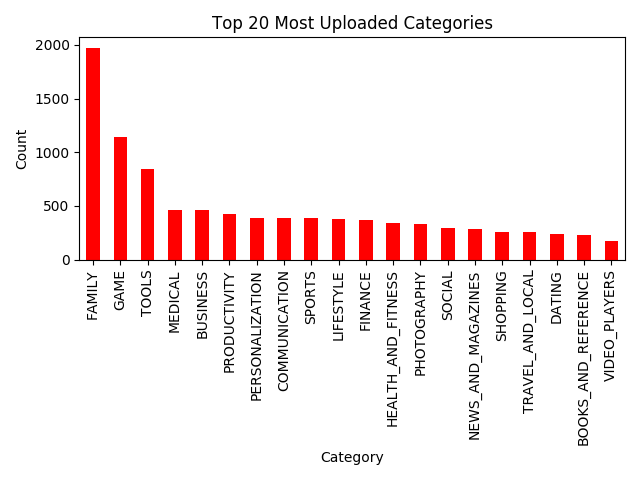
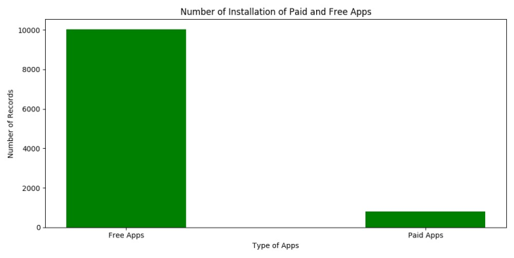

The above correlation plot shows a strong relationship between sentiment_subjectivity and sentiment_polarity.
Bar Plots were used to see the trend of Apps being liked by the users based on the category. The graph basically shows that the Apps related to Finance, Lifestyle, Family, Medical and Productivity are mostly used by the users. So if anyone is looking to launch an app, they can increase the chance of their app being successful by focusing the app around one or more of these categories.
The pie chart shows the popularity of app categories on the basis of installation. The pie chart suggests that Game Apps and Family apps are installed significantly more than other types of Apps.
The above graph shows that the categories of the apps that are highly installed are Family and Gaming.
The above graph shows that the number of installations is way high when the apps are free as compared to when the apps are paid. This can be a potential reason for apps having in-app purchases rather than asking for payment up-front. This increases the chances of the app being installed by 40%.